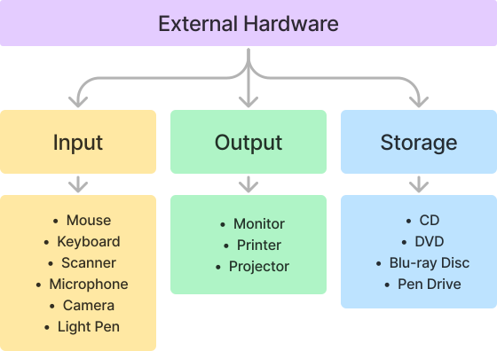
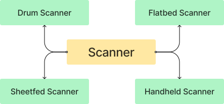

I. New Words
| 1. multimedia | 6. versatile |
| 2. arithmetic | 7.circuit |
| 3. access | 8. dimension |
| 4. peripheral | 9.frequently |
| 5. sequential | 10.embedded |
II. FAII
III. Tech Vocabulary
- Microprocessor: It is an integrated circuit that contains all the functions of a central processing unit of a computer.
- Pixel: It is the smallest unit of a digital image on a computer display.
IV. Expansions
- CRT - Cathode Ray Tube
- LED - Light Emitting Diode
- LCD - Liquid Crystal Display
- PCB - Printed Circuit Board
- ALU - Arithmetic and Logical Unit
- VGA - Video Graphics Array
- SMPS - Switched Mode Power Supply
Important Points
- Hardware : The physical components of a computer system which are tangible. Ex: Internal Hardware and External Hardware
- Software:It refers to the set of programs, which are required to operate the computer system. Ex: System Software and Application Software.
- Differences between internal and External Hardware
-
Tabular form of internal Hardware Components with their usage
Internal Hardware Components Usage 1. Motherboard It is also known as PCB. It holds many crucial components of a computer system. 2. CPU It is also referred to as a Microprocessor. It carries out each instruction of a program in a sequence to perform the basic operations of the system. 3. Disk Drive It enables to read, write, delete and modify data on a storage disk. 4. SMPS It is also known as PSU (Power Supply Unit). It converts the input high voltage electric current to low voltage and supplies it to the motherboard and other parts of the computer. 5. Heat Sink It is designed to disperse the heat generated by the CPU. 6. Ports The cabinet has several connection ports for connecting specific external input or output devices. -
GO on External Hardware Components of a computer
 - GO on types of Scanners
| Internal Hardware | External Hardware |
|---|---|
| 1. The hardware components which are fixed inside the CPU cabinet | The hardware components which are connected externally to the computer. These components are also known as Peripherals. |
| 2. Ex: Motherboard, CPU, RAM, ROM, SMPS, Heat sink etc.. | Ex: Input, output and storage devices. |

Home Assignment
- Draw a GO on different components of CPU
- Nishna drew a picture and gave the print command. Name the device she used to take the output
Chart work
- Internal hardware components of a computer (including pictures)
- Types of Ports (including pictures)
- External hardware components of a computer (including pictures)